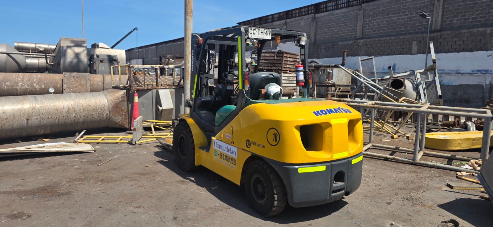
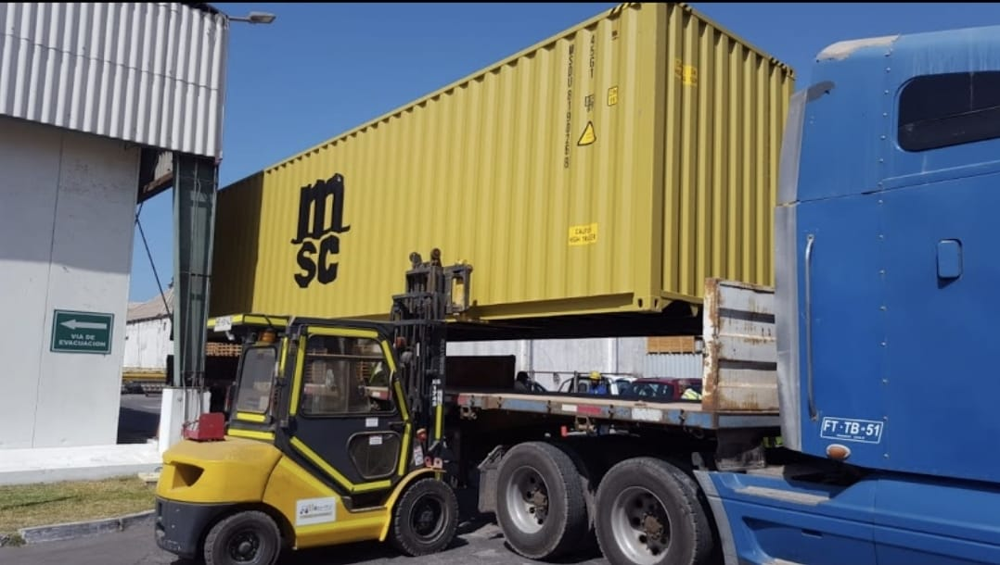
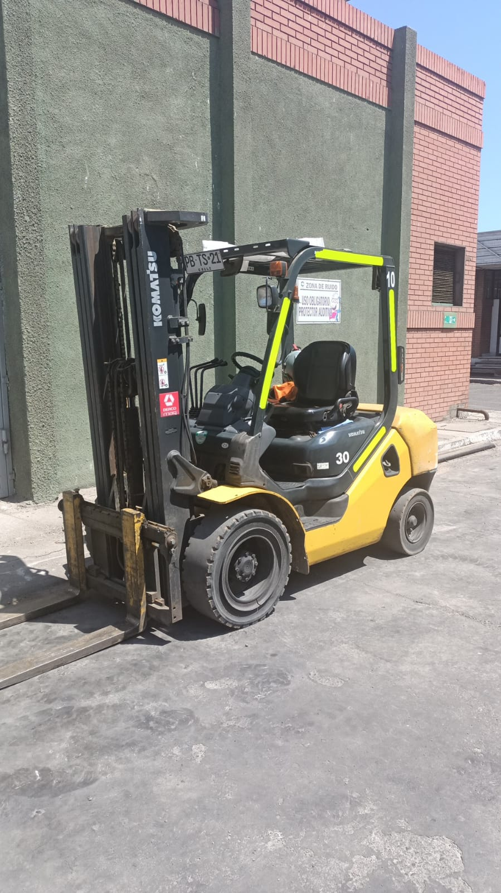
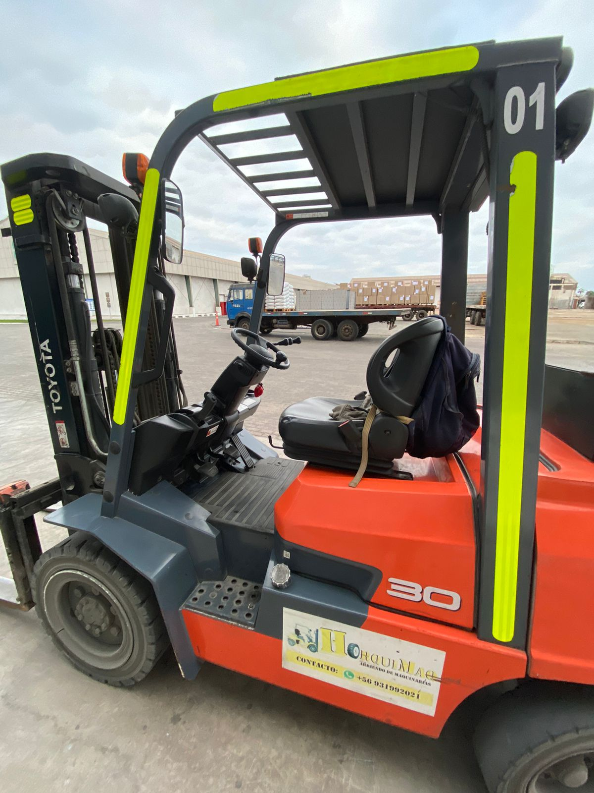
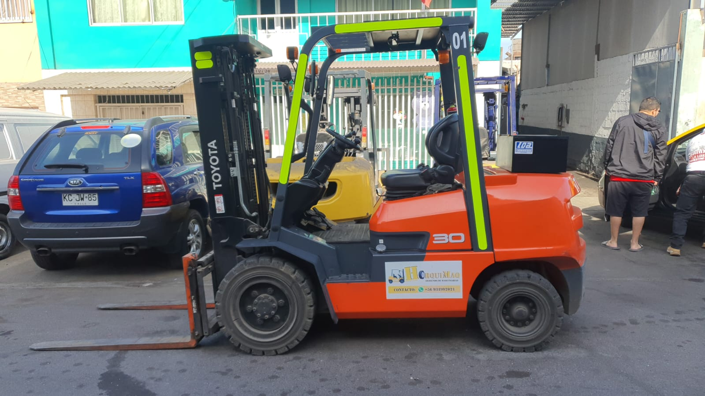
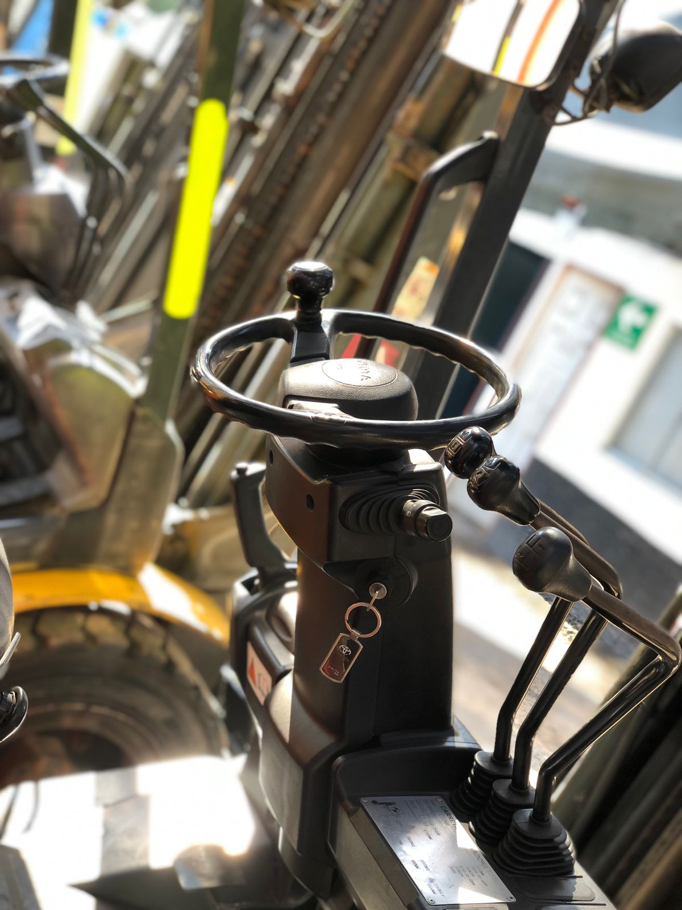
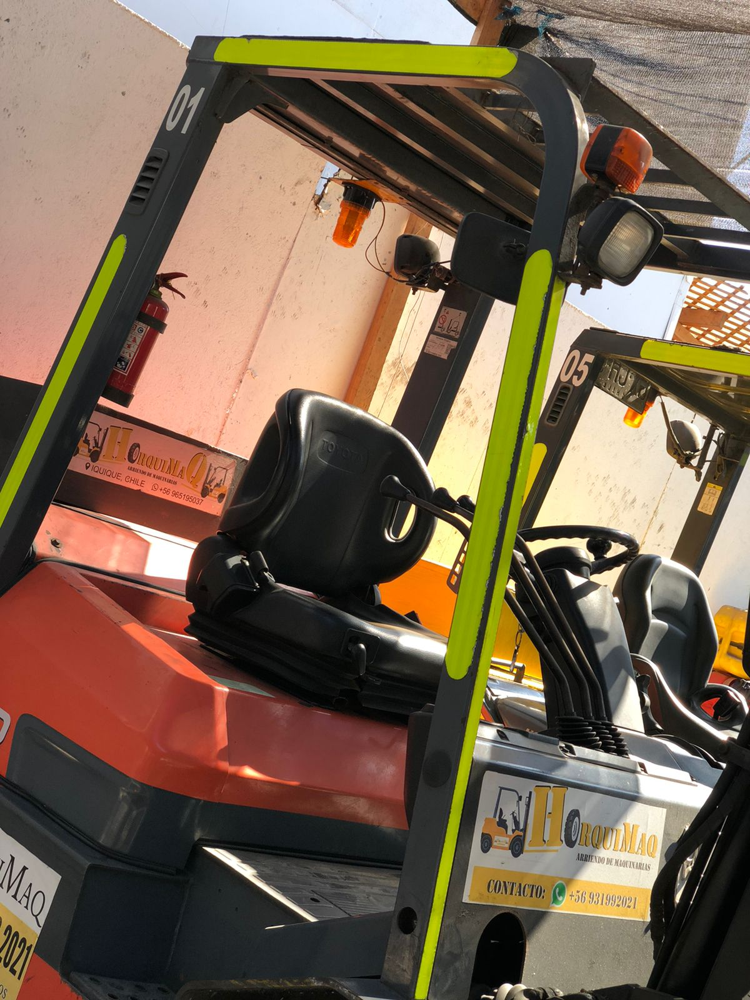

En HorquiMaq entregamos equipos preparados para apoyar operaciones de carga, descarga y traslado de materiales, adaptándonos a las necesidades de cada cliente y al tipo de faena requerida.
Disponibilidad de grúas horquilla para jornadas de trabajo, faenas específicas y apoyo continuo en operaciones logísticas.

Apoyo en procesos de carga, descarga, traslado de pallets, materiales, contenedores y mercancías en terreno.

Servicio orientado a empresas que requieren continuidad operacional, rapidez de respuesta y equipos adecuados para sus procesos.





Contáctanos y coordinamos la disponibilidad del equipo más adecuado para tu faena.
Solicitar información